|
Home Theater Reference Review System
August 1, 2002 |
For the past few months Films on Disc has undertaken a huge
reference home theater revamp. In an effort to deliver the most
accurate appraisals of DVD quality, new twin CRTs have been stacked
in a rear configuration. Two CRT projectors were used in order to
light up a ten foot wide 16 x 9 screen without overdriving the
projectors and thereby diminishing image quality. With all the new
associated equipment, a new black hole theater environment, we hope
that our critical evaluations will enable us to present the most
accurate DVD reviews possible.
We take our reviews seriously. If a DVD
looks good on our very revealing system, it will look good on
smaller less revealing systems as well. Many readers make their
purchases based on reviews. DVDs evaluated on less revealing
equipment may fail to detect the nuances that make or break DVD
quality. The flip side of the evaluation coin is that inferior
equipment can mean a DVD is not being displayed to its full
potential and equipment may introduce artifacts not inherent to the
source DVD. Does the DVD player present the sharpest image possible
from the software? Is full color bandwidth realized by the
equipment?
NTSC artifacts are often hidden when
resolution is pinched on a display device. Improper equipment set-up
can introduce its own set of problems. Pushed contrast levels can
bloom image causing a loss of detail. A careless turn of the
sharpness control can introduce excess noise or exacerbate edges
causing ringing. Calibrated equipment is an important
part of getting the image from your system. Is the monitor capable
of showing everything, warts and all, contained on the software?
Does the logic steering in your surround processing accurately place
sound throughout the theater. Do acoustic anomalies in the theater
create their own problems? All these aspects of controlling the
equipment and environment impact on an evaluation.
The Films on Disc reference home theater
does feature some of the finest equipment available, but in an
effort to maximize performance, crack ISF set-up man Jim Doolittle
inspired and consulted on the theater from the get-go. It all
started when Jim was on a visit to the last incarnation of the
theater and I went into a room behind the theater to retrieve a
piece of equipment. Jim's eyes lit up! Rear screen stack was
flashing like a set of road markers. That was the beginning of the
new theater. Once the equipment arrived and the theater environment
was made image and sound friendly, Jim arrived (from Boston) to
set-up and calibrate the stack of Runco 1200 9 inch CRT projectors.
Anal in, anal out, so they say. The time you put into careful set-up
will yield pristine pictures, and such is the case in our theater.
An optical comparator was used to set gray scales and ISF tech Ken
Whitcomb (from Indianapolis) stopped by with his Photo Research
PR-650 color analyzer to check settings against the comparator and
make some very minor adjustments. The PR-650 measured light output
from the stack as approximately 7.75 footlamberts. Doesn't sound
like a huge amount of light, but dynamic range is spectacular.
Setting up a vertical stack of projectors
to yield the best image took some thought and determination. A stand
was built accommodate both projectors. One was set-up as ceiling
mount and one as a floor mount thereby situating the CRTs in an
opposing configuration to create extraordinary white field
uniformity. Each projector is set up step by step on its own and
then the slave projector is converged to the master. A vertical
stack is definitely a lot easier to converge than a horizontal stack
as previous experience taught. Happily, the 1200s seem to be very
stable beasts, satisfied with keeping their convergence in one
place. The convergence process must be duplicated for multiple
memories in the projectors, but the process is far less arduous than
the initial set-up. In our case, set-ups for base 6500K, 1080I HDTV,
and 5400K for black and white were set-up. Aspect ratio control is
done through the Runco 4404 Ultra video processor.
It's important to remember that having
reference quality equipment may not be enough. Set-up and
maintenance must be first-rate. How many times have you seen a home
theater demonstration displaying poor images? Too many times is the
answer. Great equipment can only create beautiful images when it is
properly set-up. Top rank calibrated monitors can accurately
replicate colors as intended. A calibration by a qualified
technician is invariably necessary. Even the best equipment doesn't
perform perfectly out of the box. With home theater projectors,
slight convergence errors can make an image appear softer. More
contrast than your equipment can handle can make a picture look soft
or even distort the geometry. Too much brightness can make a picture
look washed out. Has the surround sound been properly balanced? It's
the only way to know if a disc has been mastered properly. The
answer is great weight must be given to finding the right set-up
people.
It's crucial in making a fair evaluation
that display and audio equipment have the ability to replicate what
is on the software. Sometimes you can fiddle with a picture to make
it look better, but who wants to get adjust the picture and sound
every time you watch a different movie. A standard is of
utmost importance. DVDs and laser discs should be mastered to a
universal standard. Colors should be presented for mastered
for 6500 degrees Kelvin viewing and equipment should be
calibrated to decode this accurately. You should be confident that
if your equipment is properly calibrated a well mastered DVD will
look great. And so it falls upon the reviewer to hold to even more
stringent standards. Reference equipment and diligent maintenance
are the answer.
Films on Disc does attempt to maintain the
highest standards in its home theater equipment. Projectors are
calibrated ISF trained personnel. Projector convergence is
constantly monitored and disc anomalies are checked against possible
set-up errors.
DVDs are evaluated on the following
current home theater equipment:
DVDs
are evaluated on the following current home theater equipment:
Rear configured Stewart 67 1/2' x 120" Aeroview
1.0 Gain Ultimate 4-Way ScreenWall , 2 Runco 1200 9 inch CRT
Projectors stacked floor and ceiling configuration, Runco 4404 Ultra
Digital Video Processor, Faroudja DVP3000 Digital Video Processor,
Lexicon MC12 Surround Processor/Switcher, Sony 7700 DVD Player, Sony
7000 DVD Player, Panasonic RP-91 DVD Player Sony 9000 DVD Player,
Pioneer Elite CLD-97 Laser Disc Players with AC-3
Modification, Revel 7 channel speakers configured with 2 Gems
Front, 1 Voice center, 2 Embrace sides, 2 Embrace rear, 2 Bag End Infrasubs, Lexicon 7 channel Amp, Lexicon
T-700 System Remote Control with TCM-3 RF interface Speaker Wire and
Interconnects by Monster.
Theater Views
Click
on the above thumbnails images for larger pictures and more detailed
information.
On the Rack

Lexicon 7 channel Amp |
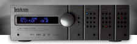
Lexicon MC12 Surround Processor |
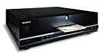
Panasonic RP-91 DVD Player |
Runco 4404 Ultra Digital Video Processor |
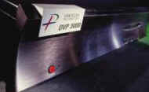
Faroudja DVP3000 Digital Video Processor |
|
Monster M-Series Interconnects
|
The Screen
|

Stewart Ultimate 4-Way ScreenWall with Aeroview Screen
|
Behind the
Screen
|
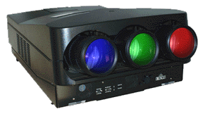
Two Runco 1200 9 inch CRT Projectors
|
|
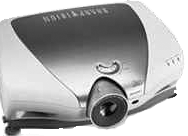
Sharp X
|
|
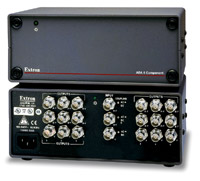
ADA 6 Component
One Input, Six Output Distribution Amplifier
|
|
Monster M-Series Interconnects
|
Trimmings, Decor
& More
|
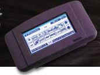
Lexicon T-700 System Remote Control with TCM-3 RF interface
|
|
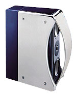
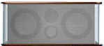
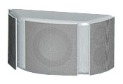
Revel Speakers, 2 Gem,
1 Voice, 4 Embrace.
|
|
Monster Speaker Wire
|
|
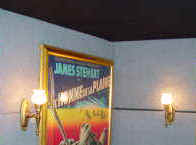
Acoustical wall and ceiling panels
from Acoustic Innovations |
|
|
|
©
|
|
|
|
|

Selections from the Feature
Archive include articles on Akira Kurosawa, Blonde Bimbos, Frank Darabont, Steven Culp, John Herzfeld or Vietnam: The Hollywood Pariah, and many
more....

Watching Movies or Watching Video
Don't lose sight of why you bought that DVD in the first place.

 Jim Doolittle Jim Doolittle
ISF Instructor. Premier calibrator and expert front projection system
setup technician in the Boston area.

ISF Course Instructors Jim Burns and Kevin Miller are hosting the Digital Film Forum. Join
professionals and enthusiasts for lively home theater discussion.

Looking for information about widescreen movies and hardware. The Widescreen
Movie Center is the place to go.

The AV Science Forum provides great feedback on the latest home
theater equipment with a wide range of opinions. Outstanding home theater
resource.

Manufacturer of computer-video interfaces, switchers, distribution
amplifiers, computer-video scan converters, and high resolution cable.
Found in many high end home theater systems.

Maximizing home theater sound and image featuring quality
interconnects and speaker wire.

"CinemaQuest has matched the correct TV color of gray in a light
fixture."__Joe Kane
Monitor bias lighting in a pre-packaged configuration. Take the strain off
your eyes.

DVD Demystified makes it all clear. The official Internet DVD
FAQ for the rec.video.dvd Usenet newsgroups.

ISF Monitor
Calibrations in the Tristate New York area. Lots of hardware
info and frequent hardware peaks from video expert Kevin Miller. They may
be judgmental, but that's the point, isn't it. Lots of DVD reviews plus
news and more.
 Have you visited Home Theater Talk
lately? One of the friendliest places on the Net for Home Theater and DVD
discussion, you can get help for installation problems or simply share
your opinions with other Vidiots. Have you visited Home Theater Talk
lately? One of the friendliest places on the Net for Home Theater and DVD
discussion, you can get help for installation problems or simply share
your opinions with other Vidiots.

A home theater site filled with a host of useful information, including
links to many other site.
Imaging Science Foundation
The Imaging Science Foundation promotes proper standards in
home theater viewing. ISF trained technicians offer monitor calibration
services to consumers. The difference in a properly calibrated
monitor can be astounding. Click on the image to find an ISF member near
you.
 ETEKNet
is the web's only 24-hour, totally FREE source for all your home theater,
DVD, Dreamcast, PC, and Networking tech support needs! ETEKNet
is the web's only 24-hour, totally FREE source for all your home theater,
DVD, Dreamcast, PC, and Networking tech support needs!

Terrific resource for learning about the ins and outs of movie
poster collecting.

The National Film Preservation Foundation (NFPF) is the
nonprofit organization created by the U.S. Congress to save America's film
heritage.

The home of John Tisch's invaluable Poster Price Almanac. Every serious poster
collector uses the Almanac as a reference.

Reviews of affordable remote controls in the market place. Codes and
tips as well.

An on-line Home Theater magazine with excellent hardware reviews,
including thorough and responsible research. Check it out.

Home to The American Society of Cinematographers.
Includes features from American Cinematographer Magazine and more...

Nearly 40 key software and hardware companies representing
leading consumer electronics giants, major movie studios home video and
music video units have joined forces to establish the DVD Video Group.

BargainFlix doesn't sell movies! We just tell you where to get them
for the best price! DVD reviews, giveaways and more.

Agoraquest is offering reviews, forums, news, and more
dedicated to Sony products including, televisions, cameras, audio, DVD,
and more.

The Movie Poster Archive
includes extensive poster images from the films of stars like Susan
Hayward, Kirk Douglas, Katharine Hepburn and many more. Our featured
star is Kirk Douglas.

A Star is Born/A,B

Judy Garland is brilliant in the great Hollywood tale of one star on the
rise and another sliding into the abyss. James Mason is wonderful
alongside Judy.

Click on the DVD MIA symbol for profiles of DVDs missing
in action.
Add films to the DVD MIA Master List by filling out a simple
form. Click Here

|


){kind=link}